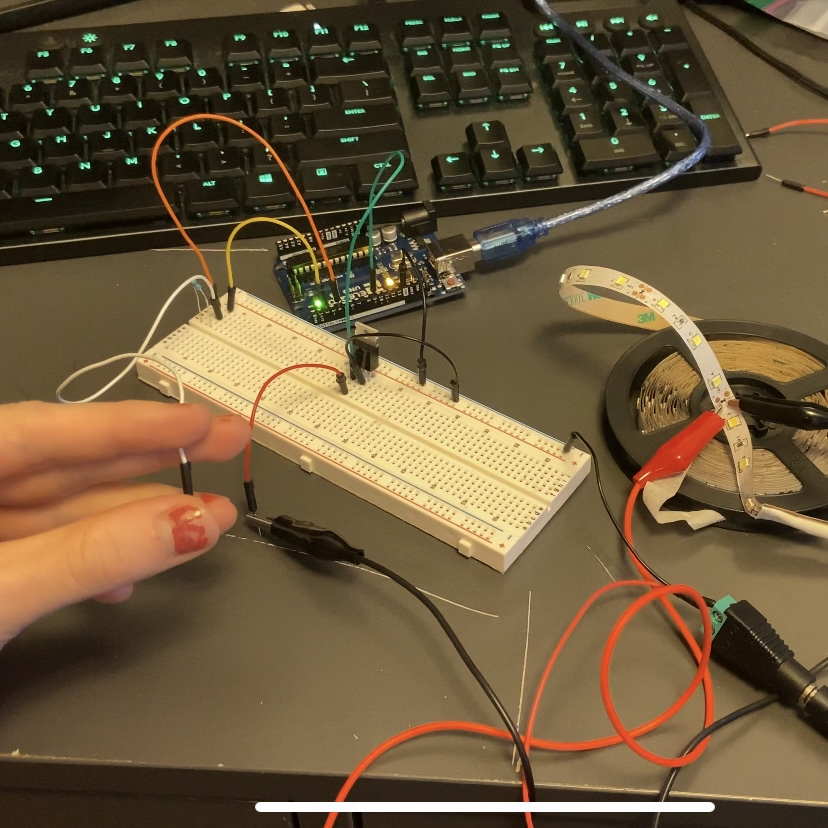
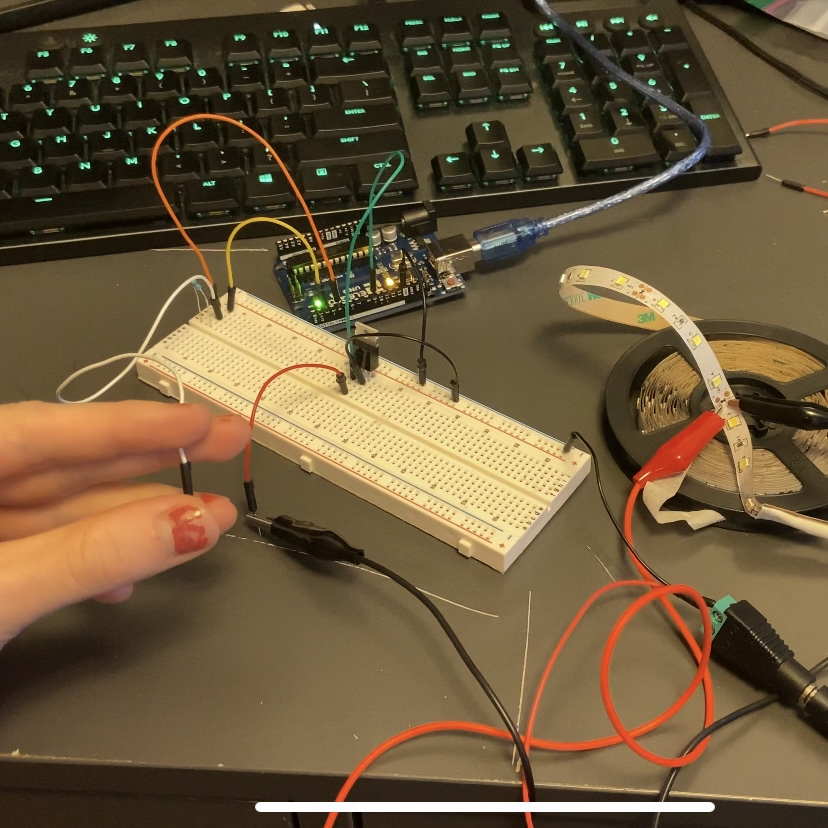
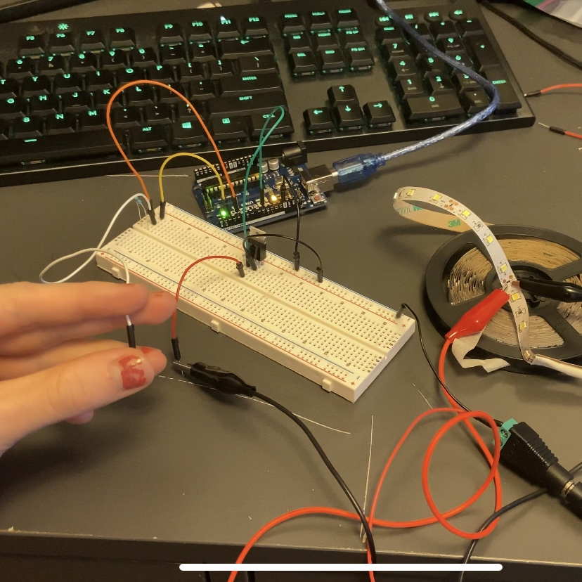
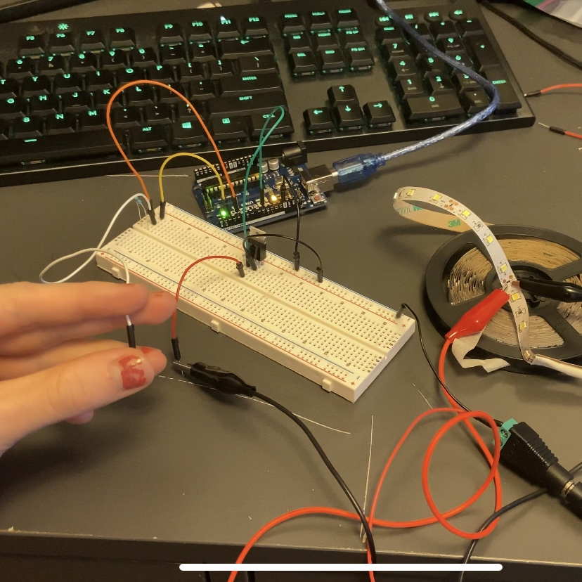

On the left you can see a gif of the assignment working. This is pre calibrated. It starts with my finger off the capacitive sensor(white wire). Then as my finger gets closer to the capacitive senor, the light strip gets brighter.
// Import packages
#include
// set up capacitive sensor
CapacitiveSensor cs_4_2 = CapacitiveSensor(4,2); // 1 megohm resistor between pins 4 & 2, pin 2 is sensor pin, add wire, metal thing
// Variables for calibration
int max = 0;
int min = 1023;
long touchValue;
int toMove;
void setup() {
cs_4_2.set_CS_AutocaL_Millis(0xFFFFFFFF); // turn off autocalibrate on channel 1 - just as an example
Serial.begin(9600); // for monitor
recalibrate(); // calibrate sensor
pinMode(9, OUTPUT);
}
void loop() {
touchValue = cs_4_2.capacitiveSensor(30); // get value from capacitive sensor
Serial.println(touchValue); // print sensor output 1
delay(10); // arbitrary delay to limit data to serial port
// Map the value so that we can use an easy scale
toMove = map(touchValue, min, max, 0, 255);
// Check if being touched
analogWrite(9, toMove);
}
// Recalibrates the min and max using data over the next 10 seconds
void recalibrate() {
// loops through 100 times (100ms each time is 10 seconds total)
for (int time = 0; time < 100; time++) {
// Get the current temp from the A0 port
touchValue = cs_4_2.capacitiveSensor(30);
// Check if temp is new max
if (touchValue > max) {
// set min
max = touchValue;
}
// Check if temp is new min
if (touchValue < min) {
// set min
min = touchValue;
}
// wait 100 ms
delay(100);
}
}
I used a 1 mega Ohm resistor because that is what was used in the example in class. We used this so that it is easy to detect when we have given the electrons a better way to groundthemselves. If we wanted to make it more sensitive we could increase the resistor.
1: What is the absolute maximum amount of current between pins 2 and 3 for this transitor?.
At 25 degrees celsius the max current is 37.2 A
2: schematic for a circuit with using at least your arduino, a DC motor, a flyback diode, and capacitors between power and ground.